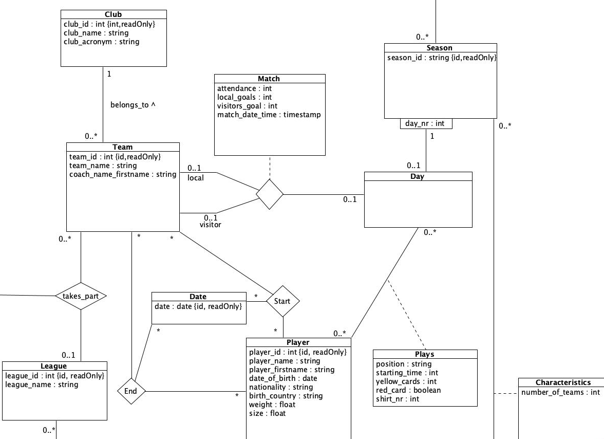
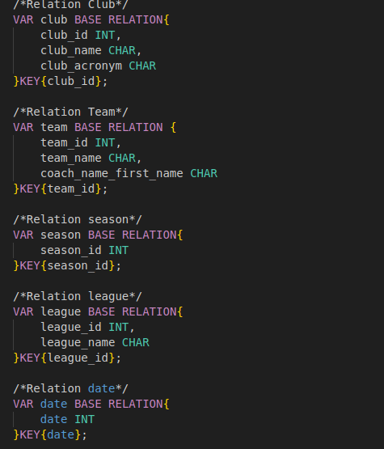
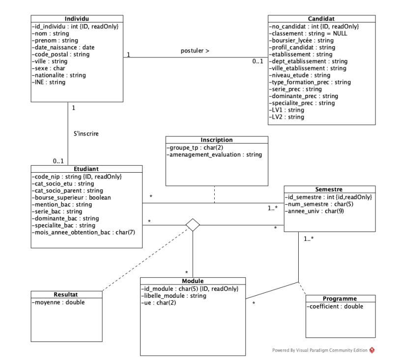
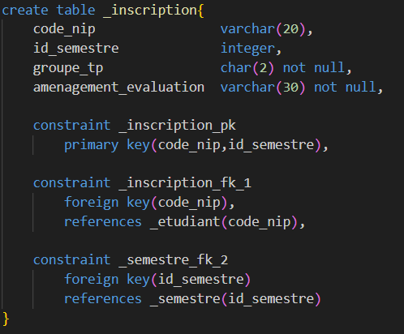

BDD de la ligue 1

La gestion des données est indispensable pour un ordinateur. En effet,
grâce aux avancées de l’informatique, le management des données s’est
considérablement amélioré. Aujourd’hui, il existe plusieurs moyens de
stocker, organiser et structurer les données. Dans le cadre de notre
premier projet, nous avons créé une base de données sur le thème de la
Ligue 1. Pour ce faire, nous avons interprété un diagramme UML afin de
concevoir la base de données de la manière la plus claire et cohérente
possible. Nous avons utilisé TutorialD pour réaliser cette création.
À gauche le diagramme, et à droite le code en TutorialD.

Candidat du BUT

Au cours du deuxième semestre, nous avons approfondi nos connaissances en
bases de données. Nous utilisons désormais le langage le plus répandu dans
ce domaine : le SQL (Structured Query Language). Notre mission consiste à
gérer une base de données portant sur les résultats des candidatures au DUT
Informatique de Lannion. Dans un premier temps, nous nous appuyons sur un
diagramme UML pour concevoir la structure de la base. Ensuite, nous procédons
à son peuplement à l’aide de l’outil WBImport du logiciel MySQL Workbench.
Enfin, nous exploitons cette base de données à l’aide de requêtes SQL afin
d’en extraire et manipuler les informations.
